Photoshop
이미지를 보정 및 합성하여 팝업과 포스터를 제작하고 웹용 이미지를 보정할 수 있습니다.
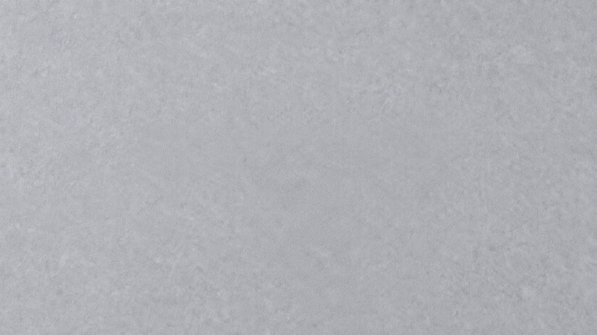
01 · ABOUT ME
디자인을 시작할 때 가장 먼저 보는 것은 화려한 효과가 아니라고 생각합니다.
정보의 우선순위는 명확한지, 여백과 정렬은 편안한지, 색상과 타이포그래피가 브랜드의 목소리를 잘 담고 있는지와 같은 ‘기초’가 되는 요소부터 신경 씀으로써
작은 요소 하나에도 이유를 만들고, 그 이유들을 모아 더 좋은 화면과 경험을 만들 수 있다고 믿습니다.
단단한 기본 위에 브랜드만의 분위기와 목적을 더해, 보기 좋은 화면을 넘어 실제로 작동하는 디자인을 만들겠습니다.
02 · WHAT CAN I DO
디자인에 필요한 그래픽 작업부터
웹 UI 설계, 프로토타입 그리고 실제 웹퍼블리싱까지
웹사이트 제작 과정에 필요한 여러 업무를 수행할 수 있습니다.
이미지를 보정 및 합성하여 팝업과 포스터를 제작하고 웹용 이미지를 보정할 수 있습니다.
로고 · 아이콘 · 그래픽 요소를 제작하고 전반적인 기능을 활용할 수 있습니다.
코드 리딩을 통해 웹 페이지 구조를 이해하고 웹 표준과 웹 접근성을 준수하는 시맨틱 마크업을 진행할 수 있으며, 반응형 레이아웃 및 인터랙션의 기초를 구현할 수 있습니다.
간단한 UI 동작과 인터랙션을 구현하고, 퍼블리싱 결과물의 완성도를 향상시킬 수 있습니다. 코드 리딩이 가능합니다.
Git을 이용한 버전 관리를 진행할 수 있으며, GitHub를 통해 협업을 진행하고 간이 페이지를 퍼블리싱할 수 있습니다. 명령어 기반 CLI 환경뿐 아니라, SourceTree를 활용한 버전 관리도 가능합니다.
ChatGPT를 이용하여 콘텐츠를 기획하고, Work Mode를 활용하여 이미지를 제작하며 Codex를 활용하여 웹퍼블리싱을 진행할 수 있습니다.
Copilot과 Codex, 각종 익스텐션을 활용하여 효율적으로 퍼블리싱할 수 있으며, 단축키를 활용해 수정 작업의 속도를 높일 수 있습니다. 내장된 Git 기능을 활용하여 코드 관리도 할 수 있습니다.
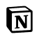
일정 · 작업 내용을 공유하고 피드백을 관리하며 팀 협업을 문서화할 수 있습니다.
03 · WORKS
나타내고자 하는 브랜드의 분위기에 맞춰 팝업을 500 × 750px로 디자인했습니다.
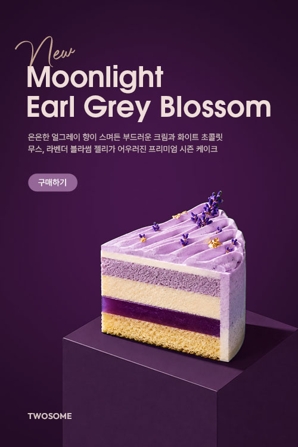
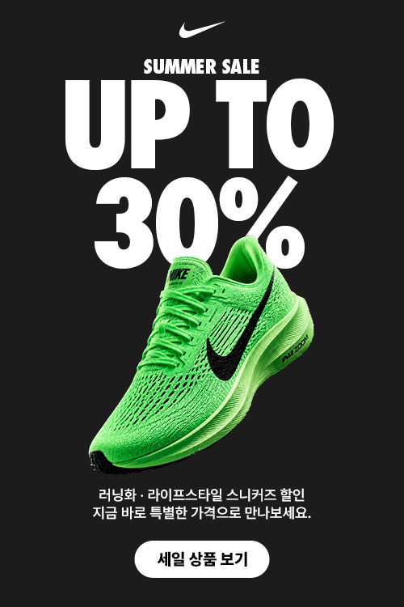
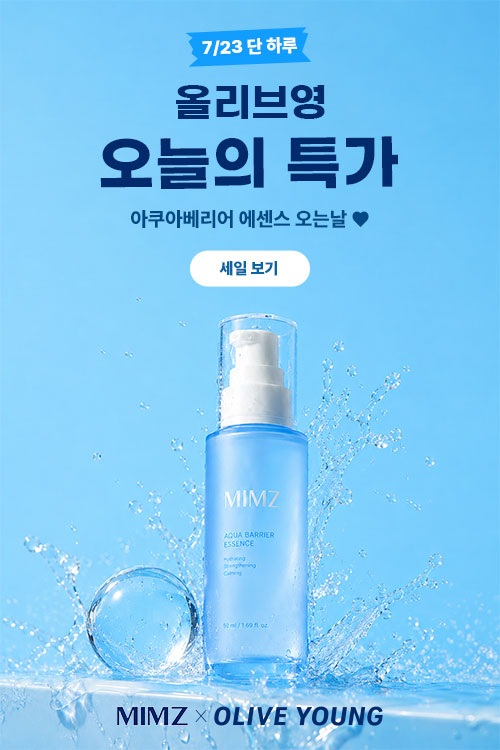
04 · WORKS
나타내고자 하는 브랜드의 분위기에 맞춰 포스터를 500 × 750px로 디자인했습니다.
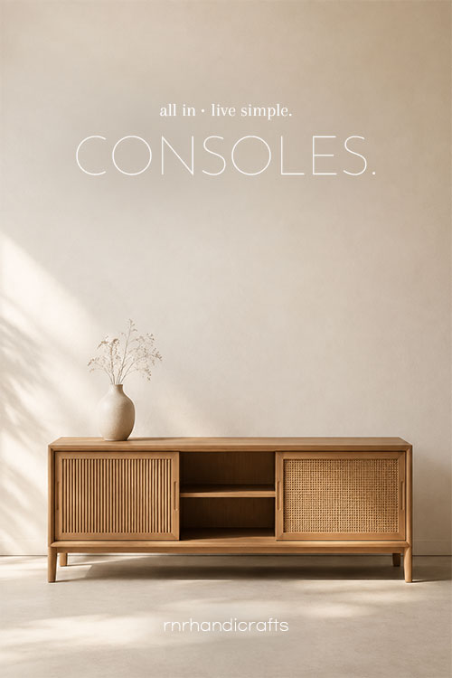
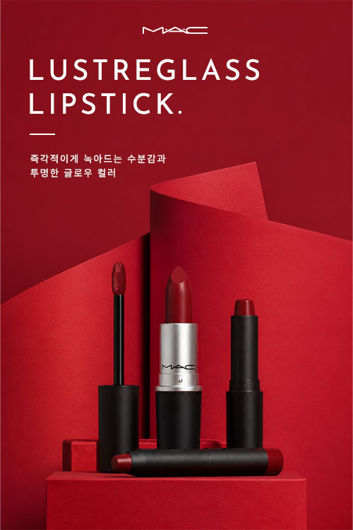
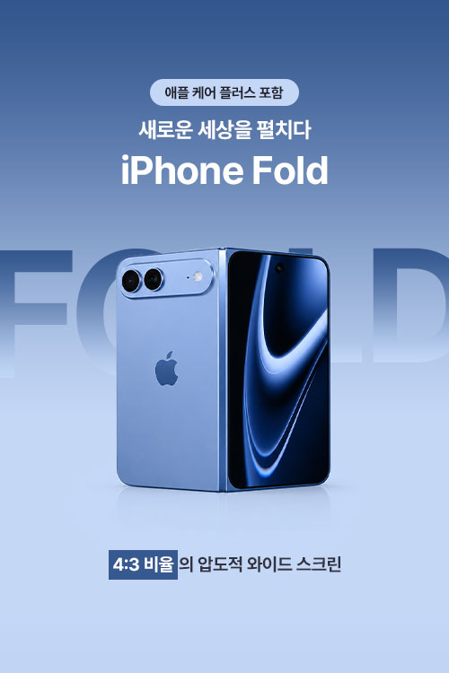
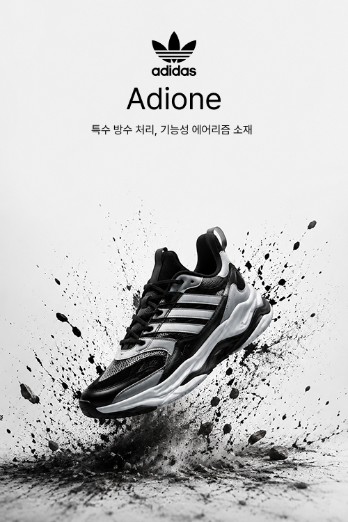
06 · WORKS
나타내고자 하는 브랜드의 분위기에 맞춰 상세 페이지를 860 × 10000px로 디자인했습니다.
07 · TEAM PROJECT
기획과 일부 디자인, 퍼블리싱을 담당했습니다.

팀원들과 기획 단계에서 Figma와 Discord를 활용하여 다양한 의견을 나누었습니다.
기획, 디자인, 퍼블리싱을 팀원 간의 긴밀한 협업으로 진행했습니다.
팀원 간의 협의를 통해 가상의 브랜드와 쇼핑몰을 제작하기로 결정했습니다.
주제를 정할 때는 서로 여러 가상의 프로젝트 주제를 목록으로 뽑아 토의했고, 팀원들의 투표를 통해 주제를 선정했습니다.
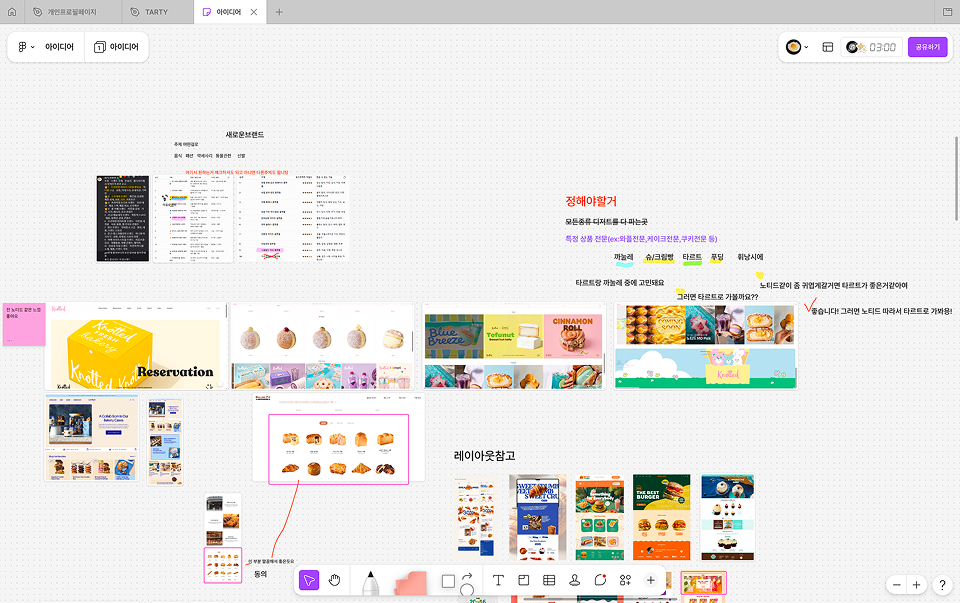
전체적인 방향을 타르트 숍의 귀엽고 산뜻한 분위기로 정한 후, 디저트 쇼핑몰을 벤치마킹했습니다. 선호도 투표를 통해 표현하고자 하는 분위기를 결정하고, 각 쇼핑몰의 색상과 화면 구성을 분석해 프로젝트 방향을 정했습니다.
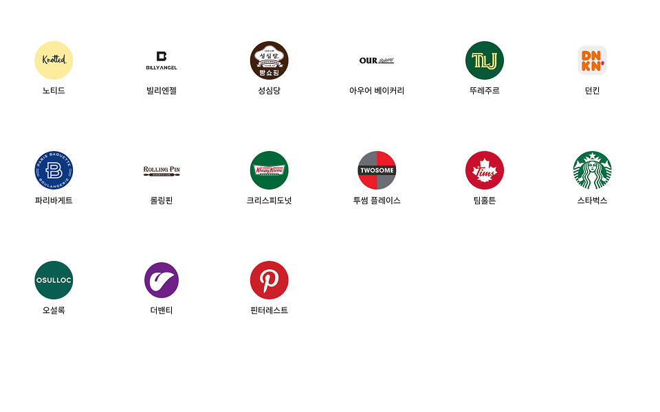
벤치마킹 작업에서 각자 팀원이 구성하고 싶은 섹션을 배치한 뒤, 의견을 정리하여 와이어프레임을 설계했습니다. 핵심 섹션을 중심으로 사이트의 귀엽고 산뜻한 느낌을 살리고 프로젝트의 완성도를 높이고자 했습니다.
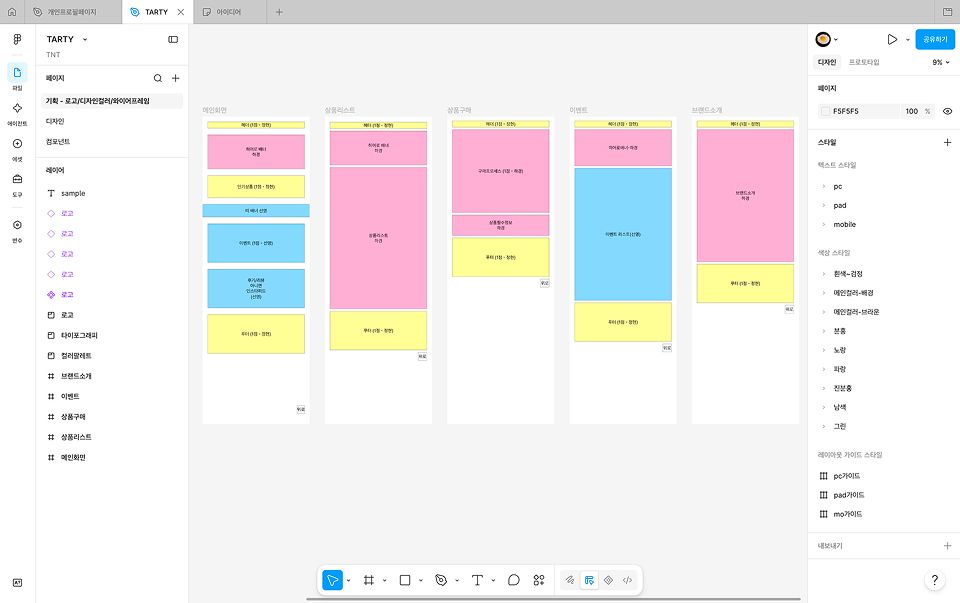
실제 디자인에 앞서 메인 색상과 보조 색상, 타이포그래피, 간격, 여백, 아이콘 등을 정리했습니다. 공통 디자인 시스템을 구성하여 실제 디자인 작업에 적용했습니다.
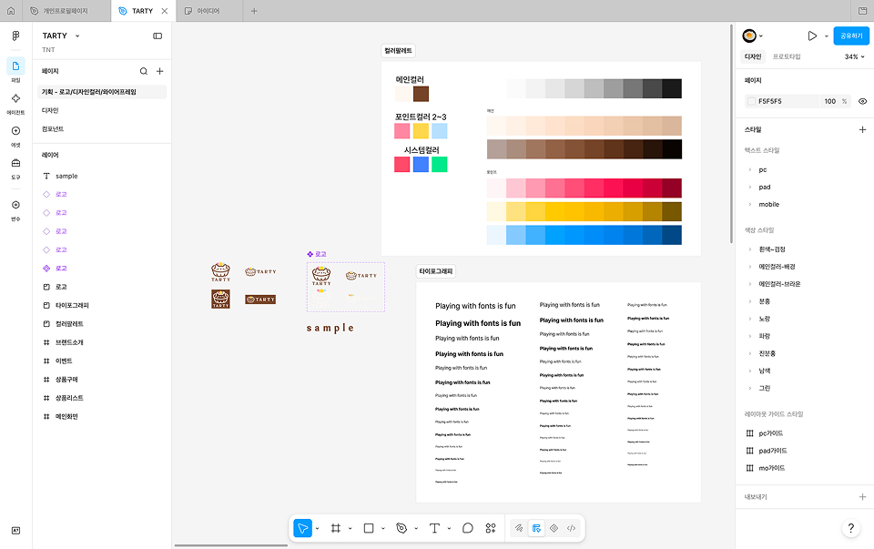
각자 맡은 섹션을 디자인하고 PC, 태블릿, 모바일 환경에 맞춰 화면을 제작했습니다.
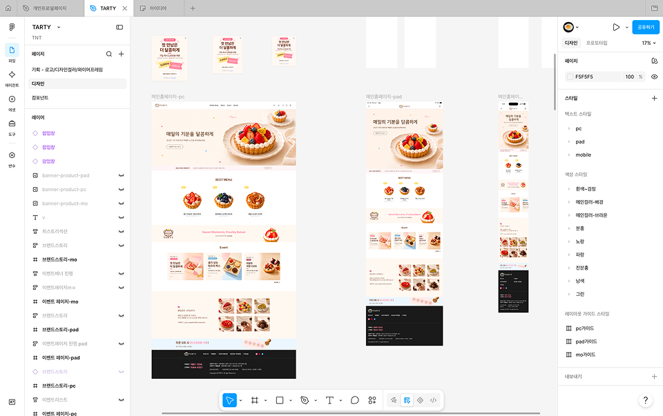
Codex를 활용하면서 구현한 코드를 직접 읽고 규칙을 정리했습니다. 색상과 간격을 공통 변수로 관리하고, 화면 크기에 따라 레이아웃이 자연스럽게 변하도록 반응형 퍼블리싱을 진행했습니다.
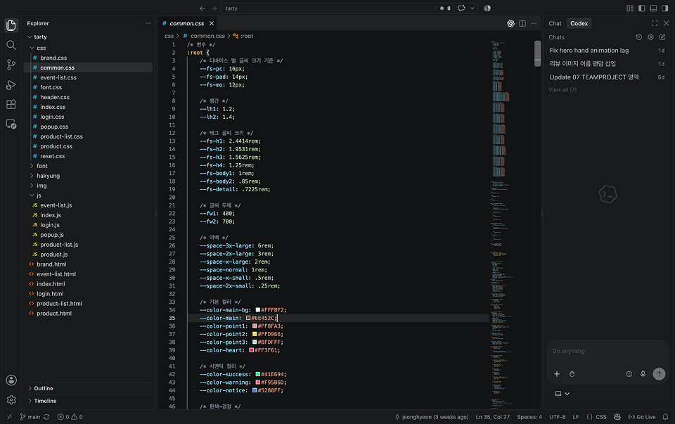
친근한 고양이 캐릭터를 기본으로 가로형과 심볼형 로고를 만들고, 밝은 배경과 어두운 배경에서 사용할 수 있도록 두 가지 버전을 제작했습니다.


타이포그래피
Pretendard 폰트를 사용하여 타이포그래피를 구성했습니다. 제목과 본문의 크기 및 굵기를 구분해 위계를 명확히 하고, 모바일 환경에서도 읽기 편하도록 구성했습니다.
일관된 간격과 정보의 위계를 바탕으로 상품, 이벤트, 브랜드 콘텐츠를 구성했습니다. 다양한 화면 크기에서도 콘텐츠가 잘 보이도록 레이아웃을 설계했습니다.

PC, 태블릿, 모바일 환경에 맞춰 디자인하고 미디어 쿼리로 구현했습니다. 이미지의 비율과 타이포그래피를 조정하고, 모바일에는 별도의 메뉴를 배치해 사용성을 높였습니다.
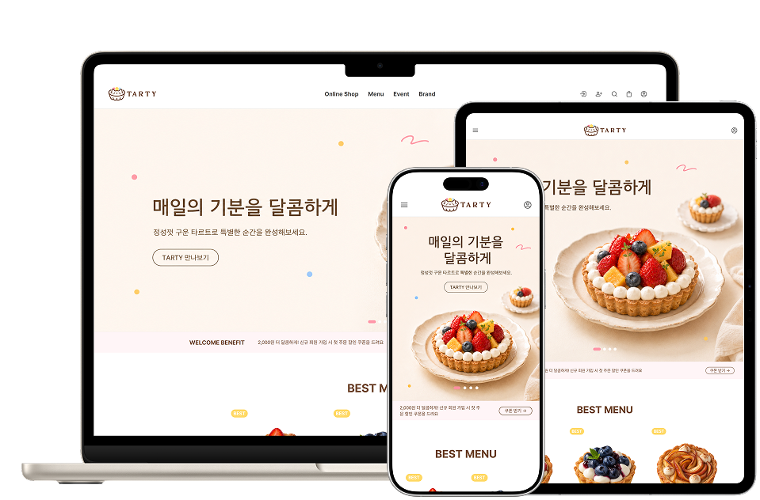
콘텐츠의 의미에 맞는 HTML 요소로 구조를 작성하고 W3C Validator로 오류와 경고를 확인했습니다.


다양한 사용자가 편하게 이용할 수 있도록 이미지 대체 텍스트와 키보드 이동을 고려했습니다. 클릭 영역을 충분히 확보하고 메뉴의 포커스 상태를 구분해 사용성을 높였습니다.
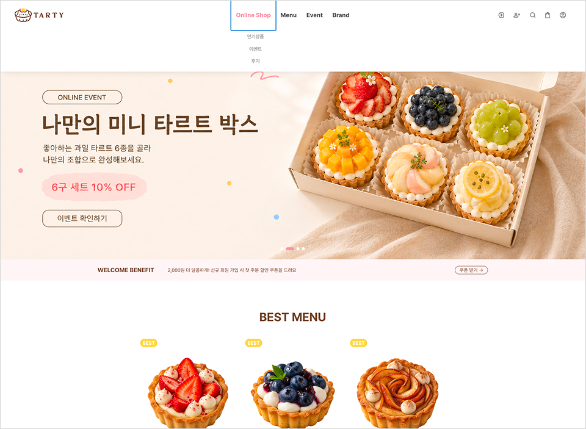
검색엔진과 SNS에서 사이트 정보가 잘 전달되도록 제목과 설명 등 meta 태그를 작성했습니다. 시맨틱 마크업을 통해 페이지 콘텐츠의 구조와 의미를 명확하게 전달했습니다.
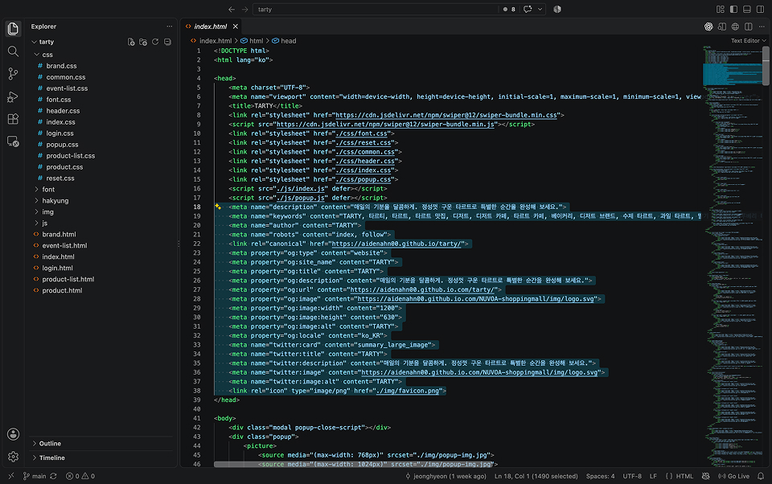
main 브랜치와 별도의 사용자별 브랜치 및 폴더를 분리하여 프로젝트의 이미지와 소스 코드를 관리했습니다.
GitHub 보기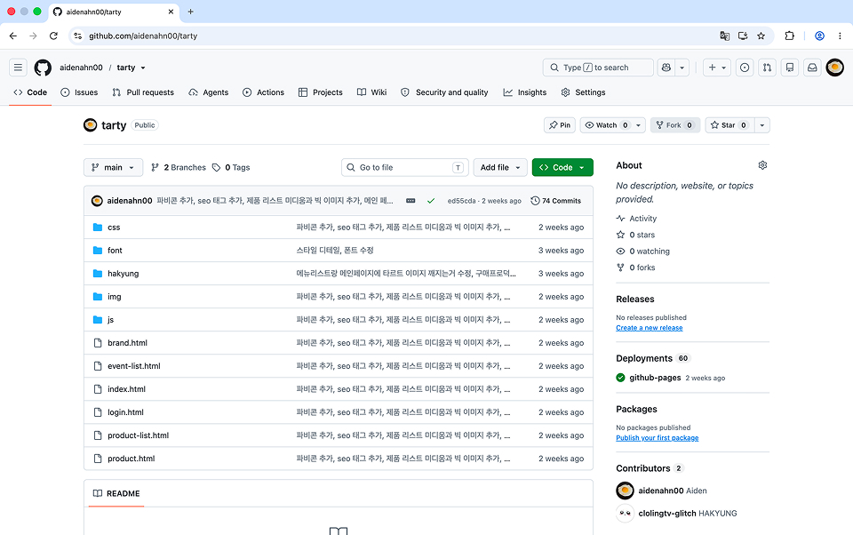
08 · SHOPPINGMALL
기획과 디자인, 퍼블리싱을 담당했습니다.

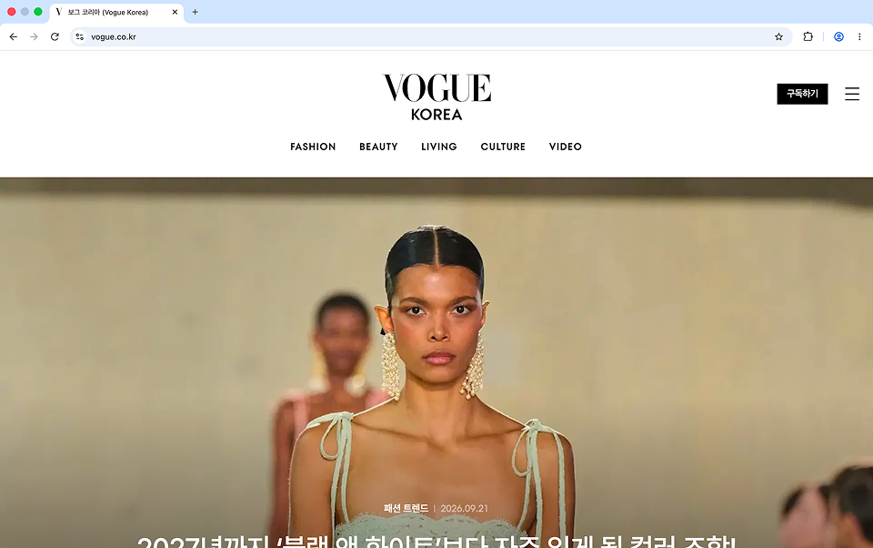
가구와 공간의 분위기를 전달할 수 있도록 이미지 중심의 웹사이트를 참고했습니다. 제품과 콘텐츠가 돋보이는 화면 구성과 여백을 살펴보고 NUVOA의 디자인 방향을 정했습니다.
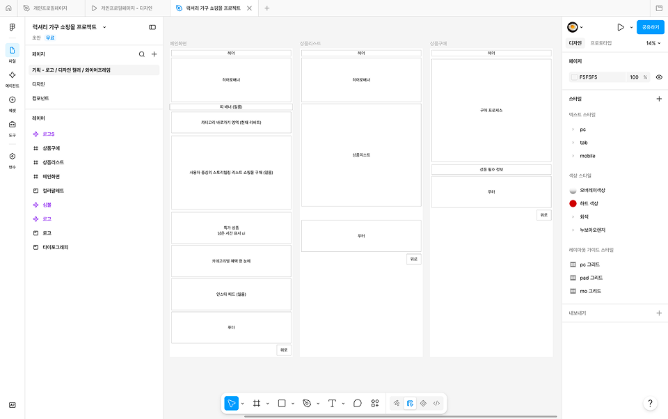
메인 비주얼, 카테고리, 상품 목록과 브랜드 콘텐츠의 순서를 정리했습니다. 사용자가 원하는 가구를 자연스럽게 탐색할 수 있도록 화면의 기본 구조를 설계했습니다.
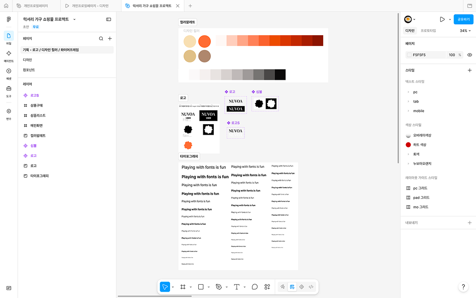
따뜻한 공간을 표현하는 색상과 가독성을 고려한 타이포그래피를 정리했습니다. 버튼과 아이콘, 간격을 통일하여 일관된 화면을 구성했습니다.
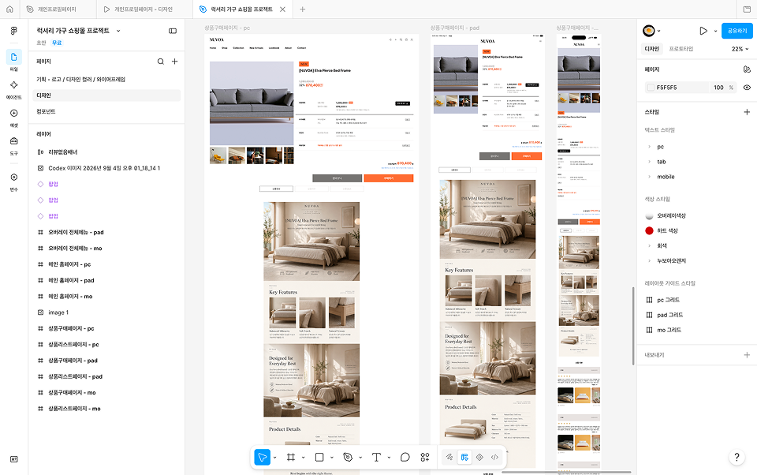
가구 사진과 여백을 중심으로 차분한 화면을 디자인했습니다. 상품의 특징과 공간의 분위기를 함께 전달하도록 콘텐츠를 배치했습니다.
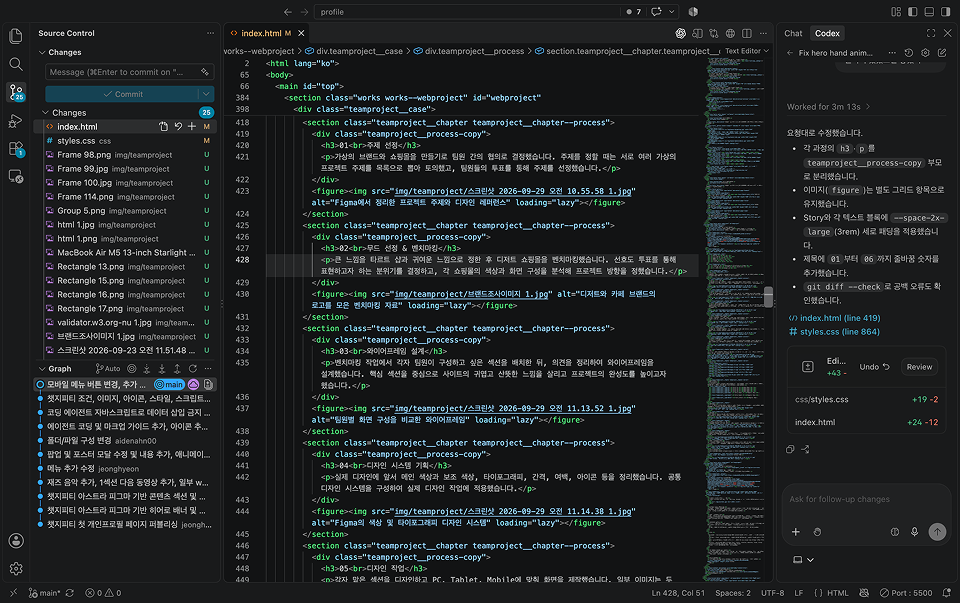
HTML, CSS, JavaScript로 화면을 구현했습니다. 코드를 직접 작성하고 읽으며 구조와 스타일을 정리하고, 화면 크기에 맞춰 레이아웃이 변하도록 구성했습니다.
럭셔리 가구 쇼핑몰 프로젝트로서 로고를 독특한 세리프체를 사용해서 명품 브랜드의 이미지를 만들었습니다.
심플하면서도 눈에 띄는 기하학적 패턴의 심볼을 사용해 브랜드 이미지를 살렸습니다.


따뜻한 크림과 베이지, 브라운을 기본으로 사용하고 오렌지를 포인트 색상으로 적용했습니다.
타이포그래피
한글과 영문을 함께 사용하기 좋은 Pretendard를 적용하고, 제목과 본문 사이의 크기와 굵기에 차이를 두어 정보의 위계를 정리했습니다.
메인 비주얼에서 상품 카테고리, 베스트 상품과 브랜드 콘텐츠로 이어지는 흐름을 구성했습니다.
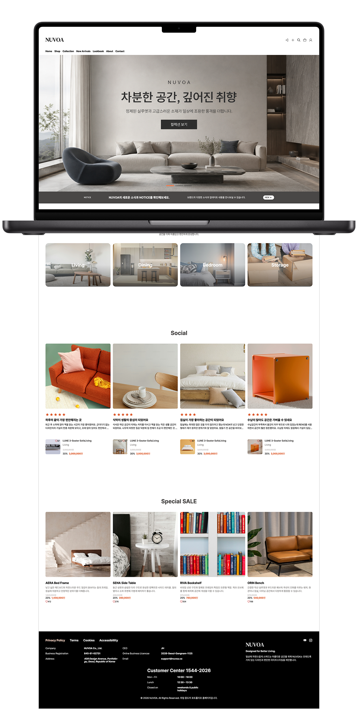
화면 너비에 따라 콘텐츠의 배치와 간격을 조정했습니다. 다양한 화면에서도 상품과 이미지를 편하게 탐색할 수 있도록 반응형 레이아웃을 구현했습니다.
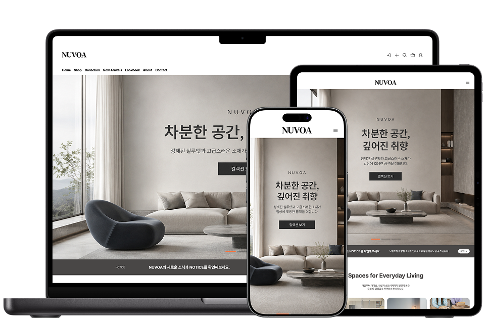
시맨틱 마크업을 통해 웹 표준을 준수했으며, 오류와 경고를 검사하여 W3C Markup Validation Service를 통과합니다.
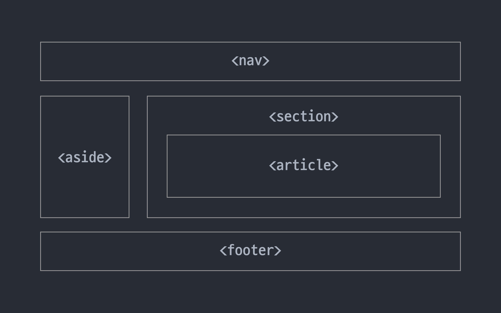
SEO란 Search Engine Optimization의 약자로, 검색 엔진에서 사이트와 콘텐츠가 잘 노출될 수 있도록 구조와 정보를 최적화하는 작업입니다. title, description 등의 메타 태그를 작성하고 시맨틱 마크업을 적용하여 검색 엔진이 페이지의 정보와 구조를 명확하게 이해할 수 있도록 구성했습니다.
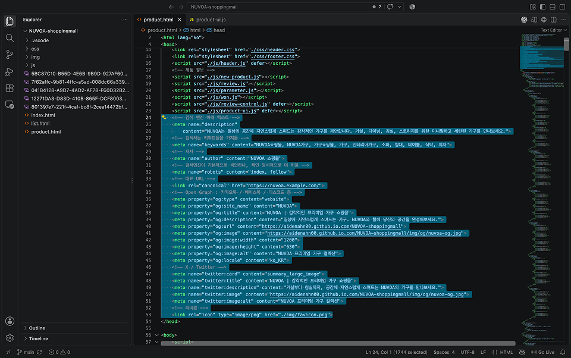
AI에 의존해 결과물만 만드는 것이 아니라, 코드를 이해하고 직접 문제를 해결할 수 있는 퍼블리셔가 되기 위해 NUVOA 프로젝트의 코드를 한 줄 한 줄 직접 작성하고 읽으며 작업했습니다.
그 결과, HTML의 문서 구조와 CSS를 활용한 기본적인 레이아웃 구성 원리를 이해할 수 있었습니다.
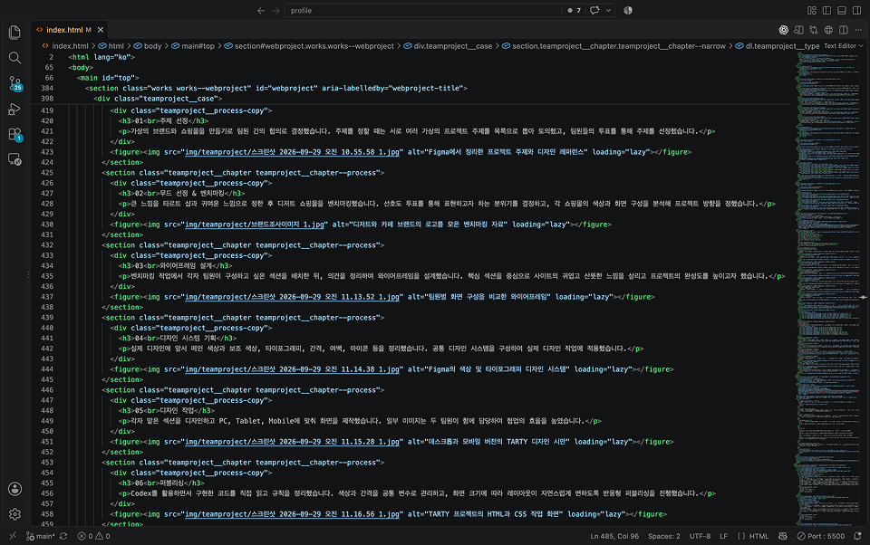
AI 모델마다 처리 속도와 성능, 토큰 사용량에 차이가 있기 때문에 작업의 난이도와 목적에 맞는 모델을 선택하여 활용했습니다. 간단한 작업에는 빠른 모델을, 복잡한 코드 분석과 문제 해결에는 높은 성능의 모델을 활용하여 작업 효율을 높이고 불필요한 토큰 사용을 줄였습니다.
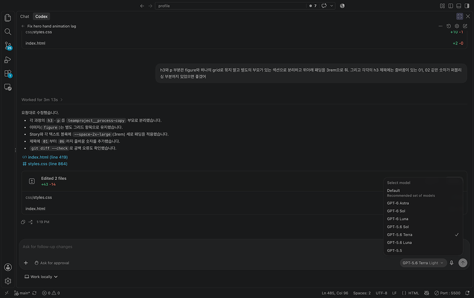
퍼블리싱을 진행하며 Git과 GitHub를 활용해 이미지와 소스코드를 관리하였습니다.
GitHub 보기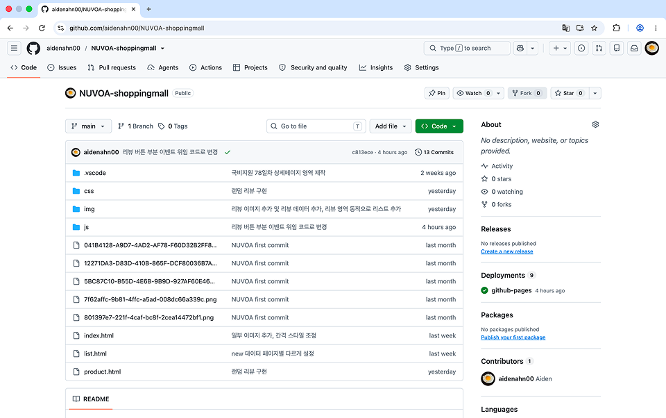